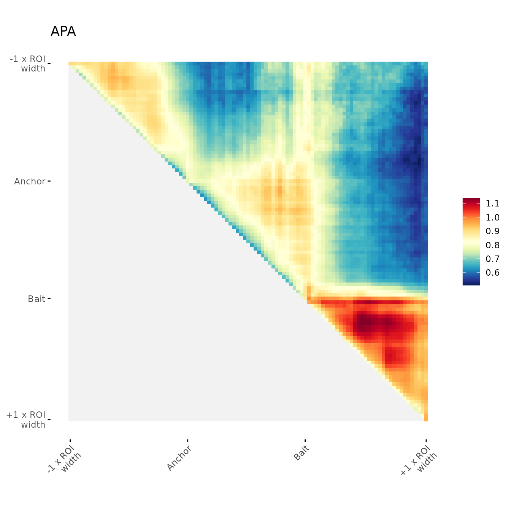
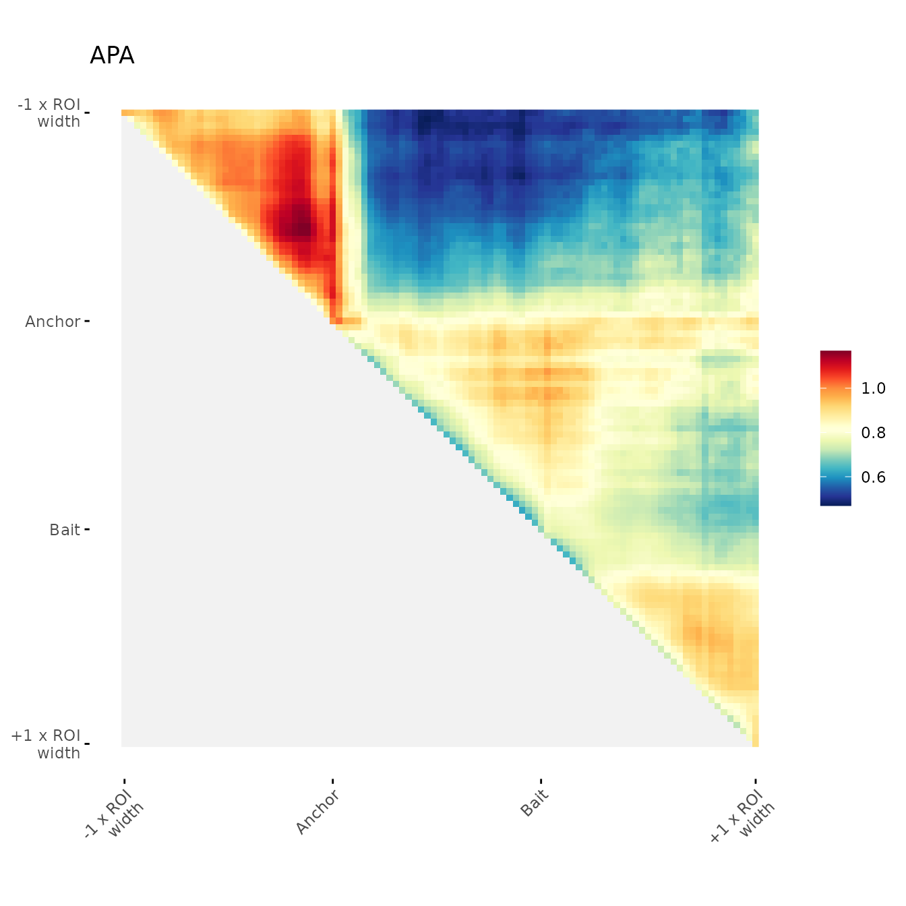
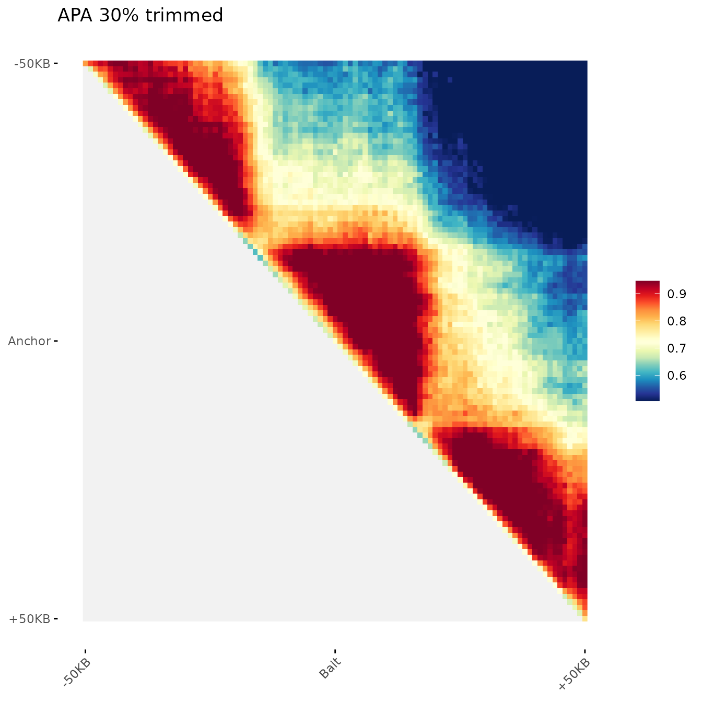
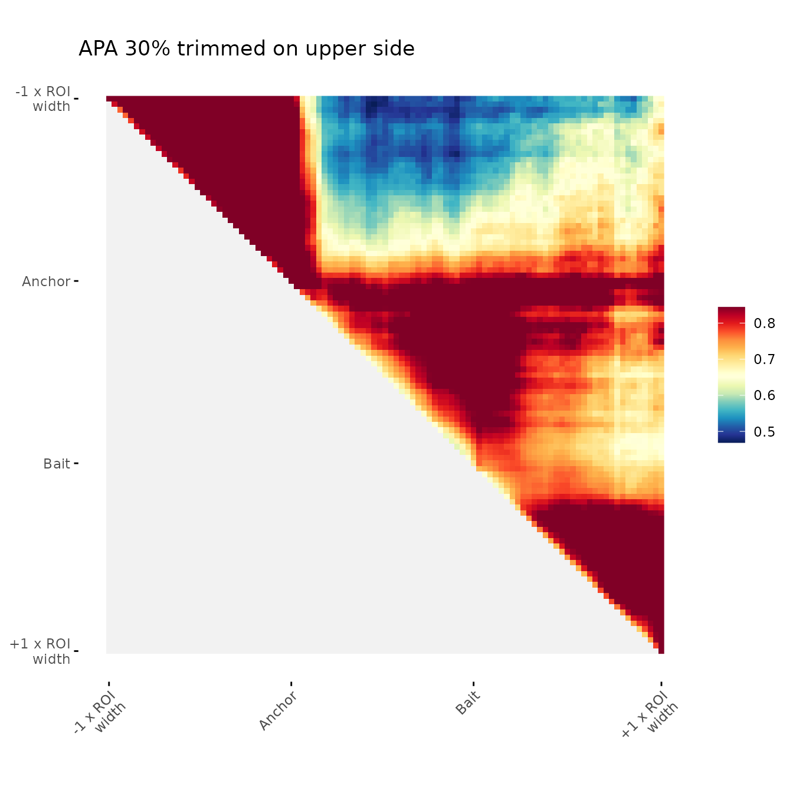
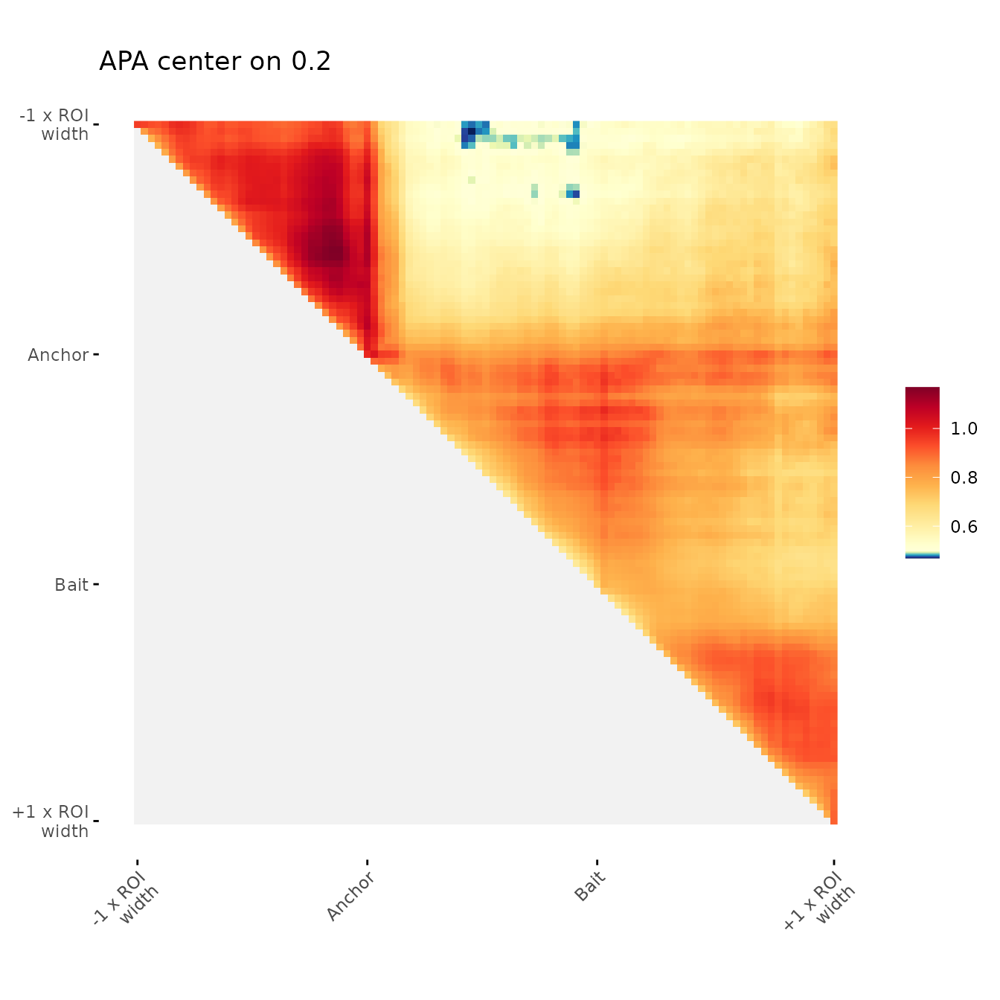
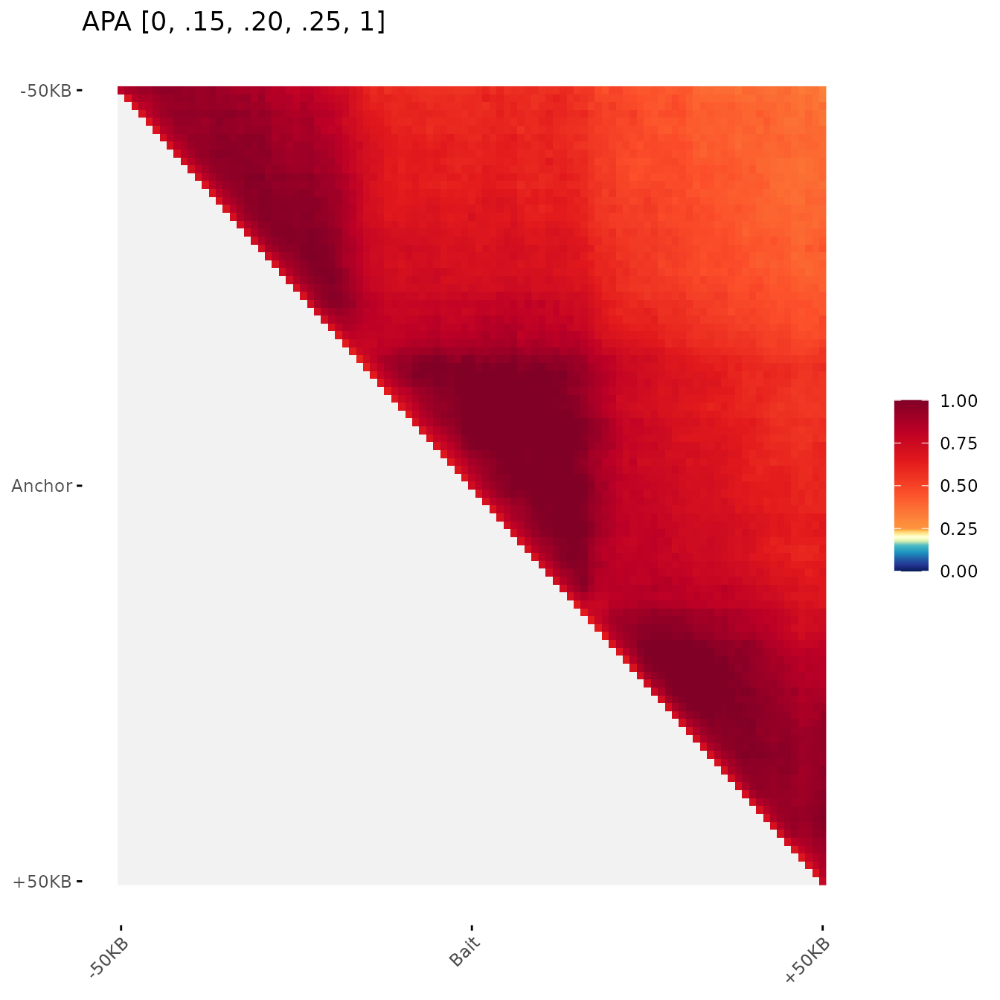
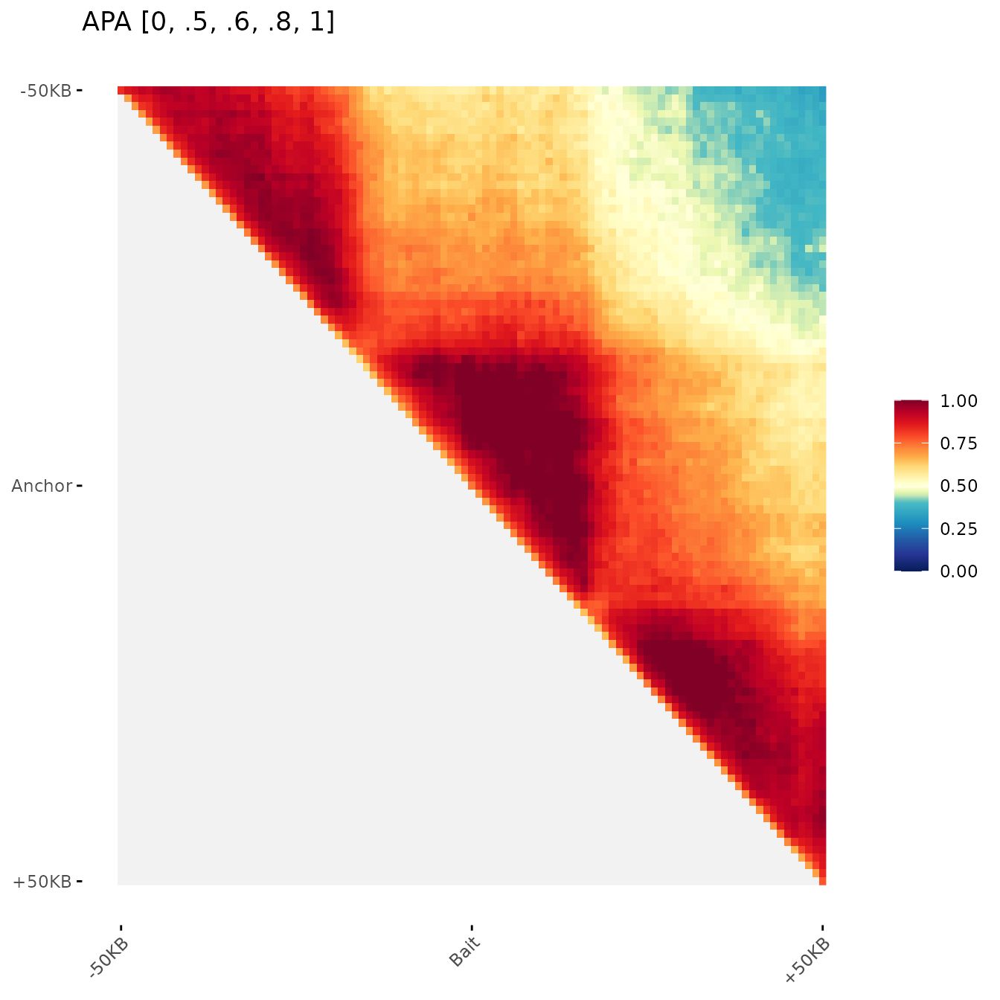
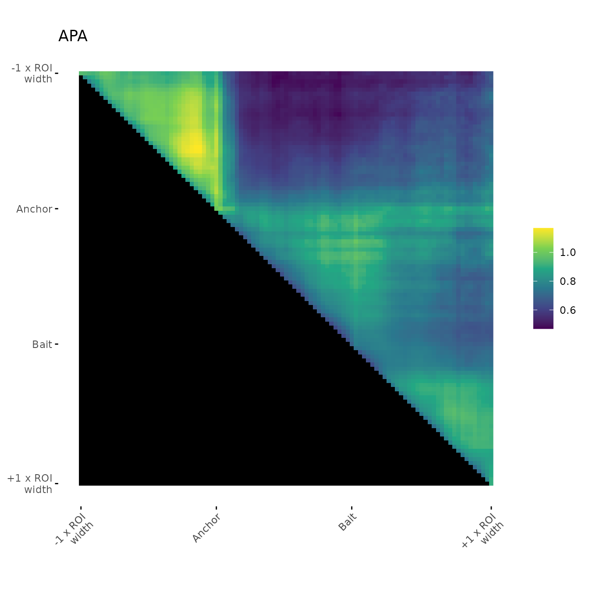

HicAggR - In depth tutorial
Nicolas Chanard, David Depierre & Olivier Cuvier
2024-03-20
Source:vignettes/InDepth.Rmd
InDepth.RmdThis package provides a set of functions useful in the analysis of 3D genomic interactions. It includes the import of standard HiC data formats into R and HiC normalisation procedures. The main objective of this package is to improve the visualization and quantification of the analysis of HiC contacts through aggregation.
Test dataset
Description
Data were obtained from Drosophila melanogaster S2 cells. 1.
HiC test dataset Directly downloaded from the 4DN platform. * Control
Condition
* Heat Shock Condition
2. Genomic coordinates:
* ChIPseq peaks of Beaf-32 protein in wild type cells (GSM1278639).
* Reference annotation data for TSS from the UCSC database.
* Topologically associating domains (TAD) annotations were defined as
described (F.
Ramirez, 2018).
1. Genomic 3D structure
For a test, please download HiC data in .hic format (Juicer) and .mcool format (HiCExplorer). Examples for each format are provided below.
Temp directory preparation
options(timeout = 3600)
temp.dir <- file.path(tempdir(), "HIC_DATA")
dir.create(temp.dir)Control condition (.hic File)
Hic.url <- paste0("https://4dn-open-data-public.s3.amazonaws.com/",
"fourfront-webprod/wfoutput/7386f953-8da9-47b0-acb2-931cba810544/",
"4DNFIOTPSS3L.hic")
HicOutput.pth <- file.path(temp.dir, "Control_HIC.hic")
HicOutput.pth <- normalizePath(HicOutput.pth)
#> Warning in normalizePath(HicOutput.pth):
#> path[1]="/tmp/RtmpHG8AYG/HIC_DATA/Control_HIC.hic": No such file or directory
if(.Platform$OS.type == "windows"){
download.file(Hic.url, HicOutput.pth, method = "auto",
extra = "-k", mode="wb")
}else{
download.file(Hic.url, HicOutput.pth, method = "auto",
extra = "-k")
}Heat shock condition (.mcool File)
Mcool.url <- paste0("https://4dn-open-data-public.s3.amazonaws.com/",
"fourfront-webprod/wfoutput/4f1479a2-4226-4163-ba99-837f2c8f4ac0/",
"4DNFI8DRD739.mcool")
McoolOutput.pth <- file.path(temp.dir, "HeatShock_HIC.mcool")
McoolOutput.pth <- normalizePath(McoolOutput.pth)
#> Warning in normalizePath(McoolOutput.pth):
#> path[1]="/tmp/RtmpHG8AYG/HIC_DATA/HeatShock_HIC.mcool": No such file or
#> directory
if(.Platform$OS.type == "windows"){
download.file(Mcool.url, McoolOutput.pth, method = "auto",
extra = "-k", mode="wb")
}else{
download.file(Mcool.url, McoolOutput.pth, method = "auto", extra = "-k")
}2 Genomic location and annotation data
These kind of data can be imported in R with rtracklayer package.
ChIPseq peaks of Beaf-32 protein
data("Beaf32_Peaks.gnr")View
| seq | start | end | strand | name | score |
|---|---|---|---|---|---|
| 2L | 35594 | 35725 | * | Beaf32_2 | 76 |
| 2L | 47296 | 47470 | * | Beaf32_3 | 44 |
| 2L | 65770 | 65971 | * | Beaf32_5 | 520 |
TSS annontation
data("TSS_Peaks.gnr")View
| seq | start | end | strand | name | class |
|---|---|---|---|---|---|
| 2L | 71757 | 71757 | + | FBgn0031213 | active |
| 2L | 76348 | 76348 | + | FBgn0031214 | inactive |
| 2L | 106903 | 106903 | + | FBgn0005278 | active |
TADs annotation
data("TADs_Domains.gnr")View
| seq | start | end | strand | name | score | class |
|---|---|---|---|---|---|---|
| 2L | 73104 | 94543 | * | Tad_1 | 3 | active |
| 2L | 94544 | 102930 | * | Tad_2 | 8 | active |
| 2L | 102931 | 121473 | * | Tad_3 | 8 | active |
Additional genome informations
Required genomic informations used by the functions during the entire pipeline are a data.frame containing chromosomes names and sized and the binSize, corresponding to the HiC matrices at the same resolution.
seqlengths.num <- c('2L'=23513712, '2R'=25286936)
chromSizes <- data.frame(
seqnames = names(seqlengths.num ),
seqlengths = seqlengths.num
)
binSize <- 1000Import HiC
The package supports the import and normalization of HiC data.
NOTE: Since version 0.99.2, the package supports import of balanced HiC matrices in .hic, .cool/.mcool formats. It also supports the import of ‘o/e’ matrices in .hic format.
Import
HicAggR can import HiC data stored in the main formats: .hic, .cool, .mcool, .h5 (since version 0.99.2). The pacakage imports by default the raw counts. Therefore, it is necessary to perform the balancing and observed/expected correction steps.
Balancing
The balancing is done such that every bin of the matrix has approximately the same number of contacts within the contactMatrix.
HiC_Ctrl.cmx_lst <- BalanceHiC(HiC_Ctrl.cmx_lst)
HiC_HS.cmx_lst <- BalanceHiC(HiC_HS.cmx_lst)Tips
- In the interactionType parameter it is required to define “cis” or “trans”. Then the function will return only ContactMatrices in the corresponding category (“cis” or “trans”). All other categories will be removed from the result.
- In the interactionType parameter if you type c(“cis”,“trans”) the function will normalize separetly “cis” or “trans”. If you type “all” the function will normalize “cis” and “trans” matrices together.
Observed/Expected Correction
To correct effects due to genomic distance the matrix is corrected by the expected values for each genomic distance. The expected values are by default calculated as the average values of contacts per chromosome and per distance.
NOTE: Since version 0.99.3, 2 more options to calculate expected values have been implemented. We designated the methods as the “lieberman” and the “mean_total”. These methods were implemented based on the options proposed by HiCExplorer’s hicTransform program. The “lieberman” method computes per distance (d) expected values by dividing the sum of all contacts by the difference of chromosome length and distance(d).
The “mean_total” is simply the average of all contact values including 0 values, which are ignored in the default method (“mean_non_zero”)
HiC_Ctrl.cmx_lst <- OverExpectedHiC(HiC_Ctrl.cmx_lst)
HiC_HS.cmx_lst <- OverExpectedHiC(HiC_HS.cmx_lst)HiC data format: ContactMatrix list structure
Each element of the list corresponds to a ContactMatrix object (dgCMatrix object, sparse matrix format) storing contact frequencies for one chromosome (cis-interactions, ex: “2L_2L”) or between two chromosomes (trans-interactions, ex: “2L_2R”). HiC data format is based on InteractionSet and Matrix packages.
str(HiC_Ctrl.cmx_lst,max.level = 4)
#> List of 3
#> $ 2L_2L:Formal class 'ContactMatrix' [package "InteractionSet"] with 5 slots
#> .. ..@ matrix :Formal class 'dgCMatrix' [package "Matrix"] with 6 slots
#> .. ..@ anchor1 : int [1:23514] 1 2 3 4 5 6 7 8 9 10 ...
#> .. ..@ anchor2 : int [1:23514] 1 2 3 4 5 6 7 8 9 10 ...
#> .. ..@ regions :Formal class 'GRanges' [package "GenomicRanges"] with 7 slots
#> .. ..@ metadata:List of 10
#> .. .. ..$ name : chr "2L_2L"
#> .. .. ..$ type : chr "cis"
#> .. .. ..$ kind : chr "U"
#> .. .. ..$ symmetric : logi TRUE
#> .. .. ..$ resolution : num 1000
#> .. .. ..$ expected : num [1:6540004] 52 65.8 52 39.8 65.8 ...
#> .. .. ..$ removedCounts:Formal class 'dgCMatrix' [package "Matrix"] with 6 slots
#> .. .. ..$ observed : num [1:6540004] 41 126 34 60 90 32 77 89 74 87 ...
#> .. .. ..$ normalizer : num [1:6540004] 1.085 0.971 0.869 1.345 1.203 ...
#> .. .. ..$ mtx : chr "norm"
#> $ 2L_2R:Formal class 'ContactMatrix' [package "InteractionSet"] with 5 slots
#> .. ..@ matrix :Formal class 'dgCMatrix' [package "Matrix"] with 6 slots
#> .. ..@ anchor1 : int [1:23514] 1 2 3 4 5 6 7 8 9 10 ...
#> .. ..@ anchor2 : int [1:25287] 23515 23516 23517 23518 23519 23520 23521 23522 23523 23524 ...
#> .. ..@ regions :Formal class 'GRanges' [package "GenomicRanges"] with 7 slots
#> .. ..@ metadata:List of 9
#> .. .. ..$ name : chr "2L_2R"
#> .. .. ..$ type : chr "trans"
#> .. .. ..$ kind : chr NA
#> .. .. ..$ symmetric : logi FALSE
#> .. .. ..$ resolution : num 1000
#> .. .. ..$ removedCounts:Formal class 'dgCMatrix' [package "Matrix"] with 6 slots
#> .. .. ..$ observed : num [1:1459521] 1 1 1 1 1 1 1 1 1 1 ...
#> .. .. ..$ normalizer : num [1:1459521] 5.4 11.23 4.2 7.18 3.08 ...
#> .. .. ..$ expected : num 0.00248
#> $ 2R_2R:Formal class 'ContactMatrix' [package "InteractionSet"] with 5 slots
#> .. ..@ matrix :Formal class 'dgCMatrix' [package "Matrix"] with 6 slots
#> .. ..@ anchor1 : int [1:25287] 1 2 3 4 5 6 7 8 9 10 ...
#> .. ..@ anchor2 : int [1:25287] 1 2 3 4 5 6 7 8 9 10 ...
#> .. ..@ regions :Formal class 'GRanges' [package "GenomicRanges"] with 7 slots
#> .. ..@ metadata:List of 10
#> .. .. ..$ name : chr "2R_2R"
#> .. .. ..$ type : chr "cis"
#> .. .. ..$ kind : chr "U"
#> .. .. ..$ symmetric : logi TRUE
#> .. .. ..$ resolution : num 1000
#> .. .. ..$ expected : num [1:7019675] 37.7 52.5 45.6 52.5 25 ...
#> .. .. ..$ removedCounts:Formal class 'dgCMatrix' [package "Matrix"] with 6 slots
#> .. .. ..$ observed : num [1:7019675] 2 11 2 1 6 7 7 19 1 1 ...
#> .. .. ..$ normalizer : num [1:7019675] 16.14 7.53 26.57 93.73 8.38 ...
#> .. .. ..$ mtx : chr "norm"
#> - attr(*, "resolution")= num 1000
#> - attr(*, "chromSize")= tibble [2 × 3] (S3: tbl_df/tbl/data.frame)
#> ..$ name : chr [1:2] "2L" "2R"
#> ..$ length : num [1:2] 23513712 25286936
#> ..$ dimension: num [1:2] 23514 25287
#> - attr(*, "matricesKind")= tibble [3 × 4] (S3: tbl_df/tbl/data.frame)
#> ..$ name : chr [1:3] "2L_2L" "2L_2R" "2R_2R"
#> ..$ type : chr [1:3] "cis" "trans" "cis"
#> ..$ kind : chr [1:3] "U" NA "U"
#> ..$ symmetric: logi [1:3] TRUE FALSE TRUE
#> - attr(*, "mtx")= chr "o/e"
#> - attr(*, "expected")= tibble [24,362 × 2] (S3: tbl_df/tbl/data.frame)
#> ..$ distance: num [1:24362] 1 1001 2001 3001 4001 ...
#> ..$ expected: num [1:24362] 52.3 68.7 42.8 35.5 30.4 ...
#>The list has the attributes described below. These attributes are accessible via:
attributes(HiC_Ctrl.cmx_lst)
#> $names
#> [1] "2L_2L" "2L_2R" "2R_2R"
#>
#> $resolution
#> [1] 1000
#>
#> $chromSize
#> # A tibble: 2 × 3
#> name length dimension
#> <chr> <dbl> <dbl>
#> 1 2L 23513712 23514
#> 2 2R 25286936 25287
#>
#> $matricesKind
#> # A tibble: 3 × 4
#> name type kind symmetric
#> <chr> <chr> <chr> <lgl>
#> 1 2L_2L cis U TRUE
#> 2 2L_2R trans NA FALSE
#> 3 2R_2R cis U TRUE
#>
#> $mtx
#> [1] "o/e"
#>
#> $expected
#> # A tibble: 24,362 × 2
#> distance expected
#> <dbl> <dbl>
#> 1 1 52.3
#> 2 1001 68.7
#> 3 2001 42.8
#> 4 3001 35.5
#> # ℹ 24,358 more rows
#>- names : the names of list elements (ContactMatrix).
-
resolution : the resolution of the HiC map.
-
chromSize : the size of the chromosomes in the
tibble format.
- seqnames : the sequence name (chromosome name).
- seqlengths : the sequence length in base pairs.
- dimension : the sequence length in number of bins. -
matricesKind : the kind of matrix that composes the
list in the tibble format.
- name : the matrix name. - type : interactionType. “Cis” for interactions on the same chromosome and “Trans” for interactions on different chromosomes. - kind : the matrix kind. U for upper triangle matrices, L for lower triangle matrices, NA for rectangular or square matrices. - symmetric : a boolean that indicates whether the matrix is symmetric (lower triangle identical to upper triangle).
- mtx : the kind of values in matrix. For exemple observed counts, normalized counts, observed/expected, etc.
-
expected : This attribute is related to the
OverExpectedHiCfunction. It gives a tibble with the expected counts as a function of genomic distance.
Each contactmatrix in the list have metadata. These are accessible via:
str(S4Vectors::metadata(HiC_Ctrl.cmx_lst[["2L_2L"]]))
#> List of 10
#> $ name : chr "2L_2L"
#> $ type : chr "cis"
#> $ kind : chr "U"
#> $ symmetric : logi TRUE
#> $ resolution : num 1000
#> $ expected : num [1:6540004] 52 65.8 52 39.8 65.8 ...
#> $ removedCounts:Formal class 'dgCMatrix' [package "Matrix"] with 6 slots
#> .. ..@ i : int [1:67995] 5 7 8 9 11 11 11 11 17 28 ...
#> .. ..@ p : int [1:23515] 0 0 0 0 0 0 0 0 0 0 ...
#> .. ..@ Dim : int [1:2] 23514 23514
#> .. ..@ Dimnames:List of 2
#> .. .. ..$ : NULL
#> .. .. ..$ : NULL
#> .. ..@ x : num [1:67995] 1 2 3 1 2 3 3 1 1 1 ...
#> .. ..@ factors : list()
#> $ observed : num [1:6540004] 41 126 34 60 90 32 77 89 74 87 ...
#> $ normalizer : num [1:6540004] 1.085 0.971 0.869 1.345 1.203 ...
#> $ mtx : chr "norm"
#>- name : the name of the ContactMatrix.
-
type : interactionType. “Cis” for
interactions on the same chromosome and “Trans” for
interactions on different chromosomes (or arms).
- kind : the matrix kind. U for upper triangle matrices, L for lower triangle matrices, NA for rectangular or square
-
symmetric : a boolean that indicates whether the
matrix is symmetric (lower triangle identical to upper triangle).
- resolution : resolution of the HiC map.
-
removedCounts : A sparse matrix (dgCMatrix) of the
removed counts (counts that are below the threshold on rows or columns
as described in
BalanceHiC). - observed : observed counts of the sparse matrix.
-
normalizer : the balancer vector that converts the
observed counts into normalized counts. (observed * normalizer =
normalized counts).
- mtx : the kind of values in matrix. For example observed counts, normalized counts, observed/expected, etc.
-
expected : This attributes is related to the
OverExpectedHiCfunction. It gives the expected vector that convert the normalized counts into the observed/expected counts (normalized counts / expected = observed/expected).
Indexing
This part of the data corresponds to the positioning data (ChIPseq peaks, genomic features and annotations, genes, etc) on the genome. To integrate such annotations with HiC data in 2D matrices, annotations must be processed as followed.
The first step is the indexing of the features. It allows the features to be splitted and grouped into bins corresponding to the HiC bin size.
Example 1: Anchors from Beaf32 ChIP-seq peaks (bed file)
anchors_Index.gnr <- IndexFeatures(
gRangeList = list(Beaf=Beaf32_Peaks.gnr),
genomicConstraint = TADs_Domains.gnr,
chromSizes = chromSizes,
binSize = binSize,
metadataColName = "score",
method = "max"
)View
| seqnames | start | end | width | strand | name | bin | constraint | Beaf.score | Beaf.name | Beaf.bln |
|---|---|---|---|---|---|---|---|---|---|---|
| 2L | 73001 | 74000 | 1000 | * | 2L:74:Tad_1 | 2L:74 | Tad_1 | 205 | Beaf32_8 | TRUE |
| 2L | 74001 | 75000 | 1000 | * | 2L:75:Tad_1 | 2L:75 | Tad_1 | 205 | Beaf32_8 | TRUE |
| 2L | 102001 | 103000 | 1000 | * | 2L:103:Tad_2 | 2L:103 | Tad_2 | 1830 | Beaf32_11 | TRUE |
Example 2: Baits from TSS (transcription start sites from UCSC)
baits_Index.gnr <- IndexFeatures(
gRangeList = list(Tss=TSS_Peaks.gnr),
genomicConstraint = TADs_Domains.gnr,
chromSizes = chromSizes,
binSize = binSize,
metadataColName = "score",
method = "max"
)View
| seqnames | start | end | width | strand | name | bin | constraint | Tss.class | Tss.name | Tss.bln |
|---|---|---|---|---|---|---|---|---|---|---|
| 2L | 76001 | 77000 | 1000 | * | 2L:77:Tad_1 | 2L:77 | Tad_1 | inactive | FBgn0031214 | TRUE |
| 2L | 106001 | 107000 | 1000 | * | 2L:107:Tad_3 | 2L:107 | Tad_3 | active | FBgn0026…. | TRUE |
| 2L | 116001 | 117000 | 1000 | * | 2L:117:Tad_3 | 2L:117 | Tad_3 | active | FBgn0031219 | TRUE |
Filter indexed features:
By using features names and bin IDs, it is possible to filter a subset of features. Example: Subset TSS that are not in the same bin than a Beaf32 peak.
non_Overlaps.ndx <- match(baits_Index.gnr$bin,
anchors_Index.gnr$bin, nomatch=0L)==0L
baits_Index.gnr <- baits_Index.gnr[non_Overlaps.ndx,]View
| seqnames | start | end | width | strand | name | bin | constraint | Tss.class | Tss.name | Tss.bln |
|---|---|---|---|---|---|---|---|---|---|---|
| 2L | 76001 | 77000 | 1000 | * | 2L:77:Tad_1 | 2L:77 | Tad_1 | inactive | FBgn0031214 | TRUE |
| 2L | 106001 | 107000 | 1000 | * | 2L:107:Tad_3 | 2L:107 | Tad_3 | active | FBgn0026…. | TRUE |
| 2L | 116001 | 117000 | 1000 | * | 2L:117:Tad_3 | 2L:117 | Tad_3 | active | FBgn0031219 | TRUE |
Tips
- It is possible to index multiple features at the same time by
submitting a named list of GRanges. Names given in the list of GRanges
can then be used to filter indexed features and pairs.
- If genomicConstraint is defined, then anchors and baits will be
paired when located within the same region only. If contraint.gnr is
NULL, entire chromosomes (or arms) are used as constraints.
- When multiple ranges are in a same bin (ex: 3 ChIP-seq peaks in the
same 10kb bin), associated numeric variables in metadata
(
metadataColName) can be summarized according to the defined method (method), Example: Max peak score of the bin is kept in metadata columnscore.
Search Pairs
Pairing
SearchPairs function takes as input one or two indexed
features and returns all putative pairs within the same constraint (ex:
wihtin the same TAD).
If only one indexed features is defined in indexAnchor,
SearchPairs will return symetrical homotypic pairs
(A<->A), if indexAnchor and indexBait are defined, it will return
asymetrical heterotypic pairs (A<->B).
interactions.gni <- SearchPairs(
indexAnchor = anchors_Index.gnr,
indexBait = baits_Index.gnr
)View
| seq | start | end | seq | start | end | name | constraint | distance | orientation | submatrix.name | name | bin | Beaf.name | Beaf.score | Beaf.bln | name | bin | Tss.name | Tss.class | Tss.bln |
|---|---|---|---|---|---|---|---|---|---|---|---|---|---|---|---|---|---|---|---|---|
| 2L | 73001 | 74000 | 2L | 76001 | 77000 | 2L:74_2L:77 | Tad_1 | 3000 | TRUE | 2L:74_2L:77 | 2L:74:Tad_1 | 2L:74 | Beaf32_8 | 205 | TRUE | 2L:77:Tad_1 | 2L:77 | FBgn0031214 | inactive | TRUE |
| 2L | 74001 | 75000 | 2L | 76001 | 77000 | 2L:75_2L:77 | Tad_1 | 2000 | TRUE | 2L:75_2L:77 | 2L:75:Tad_1 | 2L:75 | Beaf32_8 | 205 | TRUE | 2L:77:Tad_1 | 2L:77 | FBgn0031214 | inactive | TRUE |
| 2L | 114001 | 115000 | 2L | 106001 | 107000 | 2L:115_2L:107 | Tad_3 | 8000 | FALSE | 2L:107_2L:115 | 2L:115:Tad_3 | 2L:115 | Beaf32_14 | 1707 | TRUE | 2L:107:Tad_3 | 2L:107 | FBgn0026…. | active | TRUE |
Extractions
Case 1: Long-range interactions between two distal anchors.

Interactions defined with GInteraction or Pairs of GRanges.
In extracted matrices, the middle of the Y axis corresponds to the center of the first element and interacts with the center of second element in the middle of the X axis.

interactions_PFmatrix.lst <- ExtractSubmatrix(
genomicFeature = interactions.gni,
hicLst = HiC_Ctrl.cmx_lst,
referencePoint = "pf",
matriceDim = 41
)Interactions defined with GRanges.
The middle of the Y axis corresponds to the start of the range and interacts with the middle of the X axis which corresponds to the end of the range.

domains_PFmatrix.lst <- ExtractSubmatrix(
genomicFeature = TADs_Domains.gnr,
hicLst = HiC_Ctrl.cmx_lst,
referencePoint = "pf",
matriceDim = 41
)Case 2: Interactions around genomic regions or domains.
In this case, extracted matrices are resized and scaled in order to fit all regions into the same area.

Regions defined with GInteraction object or Pairs of GRanges
The region’s start is defined by the center of the first element and
the region’s end by the center of the second element. 
interactions_RFmatrix_ctrl.lst <- ExtractSubmatrix(
genomicFeature = interactions.gni,
hicLst = HiC_Ctrl.cmx_lst,
hicResolution = NULL,
referencePoint = "rf",
matriceDim = 101
)Regions defined with GRanges
The regions are directly defined by the ranges of GRanges object.

domains_RFmatrix.lst <- ExtractSubmatrix(
genomicFeature = TADs_Domains.gnr,
hicLst = HiC_Ctrl.cmx_lst,
referencePoint = "rf",
matriceDim = 101,
cores = 1,
verbose = FALSE
)Case 3: Interactions along the chromosome axis.

Example to analyse interactions in the context of TADs:
Step 1: generate a GRanges object of TAD boundaries by concatenating starts and ends of TADs.
domains_Border.gnr <- c(
GenomicRanges::resize(TADs_Domains.gnr, 1, "start"),
GenomicRanges::resize(TADs_Domains.gnr, 1, "end" )
) |>
sort()Step 2: Filter and reduce TAD boundaries GRanges object according to HiC resolution (binSize) + Store TAD names.
domains_Border_Bin.gnr <- BinGRanges(
gRange = domains_Border.gnr,
binSize = binSize,
verbose = FALSE
)
domains_Border_Bin.gnr$subname <- domains_Border_Bin.gnr$name
domains_Border_Bin.gnr$name <- domains_Border_Bin.gnr$bin
domains_Border_Bin.gnrView
| seq | start | end | strand | name | score | class | bin | subname |
|---|---|---|---|---|---|---|---|---|
| 2L | 73001 | 74000 | * | 2L:74 | 3 | active | 2L:74 | Tad_1 |
| 2L | 94001 | 95000 | * | 2L:95 | 3, 8 | active | 2L:95 | Tad_1, Tad_2 |
| 2L | 102001 | 103000 | * | 2L:103 | 8 | active | 2L:103 | Tad_2, Tad_3 |
Step 3: This defines a GRanges object. In the folowing examples, the same information is needed in a GInteraction object class.
domains_Border_Bin.gni <-
InteractionSet::GInteractions(
domains_Border_Bin.gnr,domains_Border_Bin.gnr)View
| seq | start | end | name | score | class | bin | subname | seq | start | end | name | score | class | bin | subname |
|---|---|---|---|---|---|---|---|---|---|---|---|---|---|---|---|
| 2L | 73001 | 74000 | 2L:74 | 3 | active | 2L:74 | Tad_1 | 2L | 73001 | 74000 | 2L:74 | active | 3 | 2L:74 | Tad_1 |
| 2L | 94001 | 95000 | 2L:95 | 3, 8 | active | 2L:95 | Tad_1, Tad_2 | 2L | 94001 | 95000 | 2L:95 | active | 3, 8 | 2L:95 | Tad_1, Tad_2 |
| 2L | 102001 | 103000 | 2L:103 | 8 | active | 2L:103 | Tad_2, Tad_3 | 2L | 102001 | 103000 | 2L:103 | active | 8 | 2L:103 | Tad_2, Tad_3 |
Ponctual interactions defined with GRanges
Here the start and the end of each ranges are in a same bin.
border_PFmatrix.lst <- ExtractSubmatrix(
genomicFeature = domains_Border_Bin.gnr,
hicLst = HiC_Ctrl.cmx_lst,
referencePoint = "pf",
matriceDim = 101
)Ponctual interactions defined with GInteractions
Here the first (blue on scheme) and the second (red on scheme)
elements are the same. 
border_PFmatrix.lst <- ExtractSubmatrix(
genomicFeature = domains_Border_Bin.gni,
hicLst = HiC_Ctrl.cmx_lst,
referencePoint = "pf",
matriceDim = 101
)Filtrations
The modularity of the workflow allows the user to filter
interactions, pairs or extracted submatrices at any step of the
analysis. FilterInteractions function takes as input either
a GInteraction object or a list of submatrices, and a list of targets of
choice and a selectionFunction defining how targets are filtered.
Target list definition:
Target list must be defined by a named list corresponding to the same names of each element and correspond to the column of the GInteraction (or the attributes “interactions” of the matrices to be filtered). Then each element must be a character list to match this column or a function that will test each row in the column and return a bolean.
structureTarget.lst <- list(
first_colname_of_GInteraction = c("value"),
second_colname_of_GInteraction = function(eachElement){
min_th<value && value<max_th}
)Interactions, pairs or extracted submatrices are filtered by metadata
elements from GRanges objects used in SearchPairs. Those
metadata are stored in the attributes of the list of submatrices that
are accessible as follow:
attributes(interactions_RFmatrix_ctrl.lst)$interactions
names(S4Vectors::mcols(attributes(interactions_RFmatrix_ctrl.lst)$interactions))View
| seq | start | end | seq | start | end | name | constraint | distance | orientation | submatrix.name | name | bin | Beaf.name | Beaf.score | Beaf.bln | name | bin | Tss.name | Tss.class | Tss.bln |
|---|---|---|---|---|---|---|---|---|---|---|---|---|---|---|---|---|---|---|---|---|
| 2L | 73001 | 74000 | 2L | 76001 | 77000 | 2L:74_2L:77 | Tad_1 | 3000 | TRUE | 2L:74_2L:77 | 2L:74:Tad_1 | 2L:74 | Beaf32_8 | 205 | TRUE | 2L:77:Tad_1 | 2L:77 | FBgn0031214 | inactive | TRUE |
| 2L | 114001 | 115000 | 2L | 106001 | 107000 | 2L:115_2L:107 | Tad_3 | 8000 | FALSE | 2L:107_2L:115 | 2L:115:Tad_3 | 2L:115 | Beaf32_14 | 1707 | TRUE | 2L:107:Tad_3 | 2L:107 | FBgn0026…. | active | TRUE |
| 2L | 120001 | 121000 | 2L | 106001 | 107000 | 2L:121_2L:107 | Tad_3 | 14000 | FALSE | 2L:107_2L:121 | 2L:121:Tad_3 | 2L:121 | Beaf32_15 | 484 | TRUE | 2L:107:Tad_3 | 2L:107 | FBgn0026…. | active | TRUE |
| 2L | 120001 | 121000 | 2L | 116001 | 117000 | 2L:121_2L:117 | Tad_3 | 4000 | FALSE | 2L:117_2L:121 | 2L:121:Tad_3 | 2L:121 | Beaf32_15 | 484 | TRUE | 2L:117:Tad_3 | 2L:117 | FBgn0031219 | active | TRUE |
| 2L | 273001 | 274000 | 2L | 267001 | 268000 | 2L:274_2L:268 | Tad_10 | 6000 | FALSE | 2L:268_2L:274 | 2L:274:Tad_10 | 2L:274 | Beaf32_39 | 210 | TRUE | 2L:268:Tad_10 | 2L:268 | FBgn0031239 | inactive | TRUE |
| 2L | 277001 | 278000 | 2L | 267001 | 268000 | 2L:278_2L:268 | Tad_10 | 10000 | FALSE | 2L:268_2L:278 | 2L:278:Tad_10 | 2L:278 | Beaf32_41 | 1641 | TRUE | 2L:268:Tad_10 | 2L:268 | FBgn0031239 | inactive | TRUE |
| 2L | 273001 | 274000 | 2L | 278001 | 279000 | 2L:274_2L:279 | Tad_10 | 5000 | TRUE | 2L:274_2L:279 | 2L:274:Tad_10 | 2L:274 | Beaf32_39 | 210 | TRUE | 2L:279:Tad_10 | 2L:279 | FBgn0086855 | active | TRUE |
| 2L | 305001 | 306000 | 2L | 319001 | 320000 | 2L:306_2L:320 | Tad_13 | 14000 | TRUE | 2L:306_2L:320 | 2L:306:Tad_13 | 2L:306 | Beaf32_48 | 52 | TRUE | 2L:320:Tad_13 | 2L:320 | FBgn0031248 | inactive | TRUE |
| 2L | 470001 | 471000 | 2L | 421001 | 422000 | 2L:471_2L:422 | Tad_17 | 49000 | FALSE | 2L:422_2L:471 | 2L:471:Tad_17 | 2L:471 | Beaf32_62 | 37 | TRUE | 2L:422:Tad_17 | 2L:422 | FBgn0031253 | active | TRUE |
| 2L | 471001 | 472000 | 2L | 421001 | 422000 | 2L:472_2L:422 | Tad_17 | 50000 | FALSE | 2L:422_2L:472 | 2L:472:Tad_17 | 2L:472 | Beaf32_62 | 37 | TRUE | 2L:422:Tad_17 | 2L:422 | FBgn0031253 | active | TRUE |
Example of target list:
In this example, Pairs will be filtered on anchor.Beaf.name, bait.Tss.name, name (which correponds to the submatrix IDs) and distance. The aim of the example is to filter Pairs or submatrices that have:
- “Beaf32_8” and “Beaf32_15” in
anchor.Beaf.name
- “FBgn0031214” and “FBgn0005278” in
bait.Tss.name
-
distance exactly equal to 14000 or 3000
And to exclude Pairs or submatrices that have: - “2L:74_2L:77” in name
Selection Function definition:
The selectionFunction defines which operations (union(), intersect(), setdiff()…) are used to filter the set of Pairs with target elements. For more examples, see Selection function tips and examples section.
Filtration with selection
Example of GInteraction object filtration
With a GInteraction object as input, FilterInteractions
will return the indices of filtered elements.
With the targets and selectionFun defined above:
FilterInteractions(
genomicInteractions =
attributes(interactions_RFmatrix_ctrl.lst)$interactions,
targets = targets,
selectionFun = selectionFun
)
#> [1] 3Example of Matrices list filtration
With a matrices list as input, FilterInteractions will
return the filtered matrices list, with updated attributes.
With the targets and selectionFun defined above:
filtred_interactions_RFmatrix_ctrl.lst <- FilterInteractions(
matrices = interactions_RFmatrix_ctrl.lst,
targets = targets,
selectionFun = selectionFun
)Specific case 1: Only one target (and therefore no selection needed)
For example, to filter the top 100 first elements, select the top 100 first names
GInteraction filtration
FilterInteractions(
genomicInteractions =
attributes(interactions_RFmatrix_ctrl.lst)$interactions,
targets = first100_targets,
selectionFun = NULL
) |> head()
#> submatrix.name1 submatrix.name2 submatrix.name3 submatrix.name4 submatrix.name5
#> 1 2 3 4 5
#> submatrix.name6
#> 6Matrices list filtration
first100_interactions_RFmatrix_ctrl.lst <- FilterInteractions(
matrices = interactions_RFmatrix_ctrl.lst,
targets = first100_targets,
selectionFun = NULL
)
attributes(first100_interactions_RFmatrix_ctrl.lst)$interactions
#> GInteractions object with 100 interactions and 15 metadata columns:
#> seqnames1 ranges1 seqnames2 ranges2
#> <Rle> <IRanges> <Rle> <IRanges>
#> 2L:74_2L:77 2L 73001-74000 --- 2L 76001-77000
#> 2L:115_2L:107 2L 114001-115000 --- 2L 106001-107000
#> 2L:121_2L:107 2L 120001-121000 --- 2L 106001-107000
#> 2L:121_2L:117 2L 120001-121000 --- 2L 116001-117000
#> 2L:274_2L:268 2L 273001-274000 --- 2L 267001-268000
#> ... ... ... ... ... ...
#> 2L:12515_2L:12498 2L 12514001-12515000 --- 2L 12497001-12498000
#> 2L:12516_2L:12498 2L 12515001-12516000 --- 2L 12497001-12498000
#> 2L:12515_2L:12508 2L 12514001-12515000 --- 2L 12507001-12508000
#> 2L:12516_2L:12508 2L 12515001-12516000 --- 2L 12507001-12508000
#> 2L:12515_2L:12509 2L 12514001-12515000 --- 2L 12508001-12509000
#> | name constraint distance orientation
#> | <character> <character> <integer> <logical>
#> 2L:74_2L:77 | 2L:74_2L:77 Tad_1 3000 TRUE
#> 2L:115_2L:107 | 2L:115_2L:107 Tad_3 8000 FALSE
#> 2L:121_2L:107 | 2L:121_2L:107 Tad_3 14000 FALSE
#> 2L:121_2L:117 | 2L:121_2L:117 Tad_3 4000 FALSE
#> 2L:274_2L:268 | 2L:274_2L:268 Tad_10 6000 FALSE
#> ... . ... ... ... ...
#> 2L:12515_2L:12498 | 2L:12515_2L:12498 Tad_310 17000 FALSE
#> 2L:12516_2L:12498 | 2L:12516_2L:12498 Tad_310 18000 FALSE
#> 2L:12515_2L:12508 | 2L:12515_2L:12508 Tad_310 7000 FALSE
#> 2L:12516_2L:12508 | 2L:12516_2L:12508 Tad_310 8000 FALSE
#> 2L:12515_2L:12509 | 2L:12515_2L:12509 Tad_310 6000 FALSE
#> submatrix.name anchor.bin anchor.name bait.bin
#> <character> <character> <character> <character>
#> 2L:74_2L:77 2L:74_2L:77 2L:74 2L:74:Tad_1 2L:77
#> 2L:115_2L:107 2L:107_2L:115 2L:115 2L:115:Tad_3 2L:107
#> 2L:121_2L:107 2L:107_2L:121 2L:121 2L:121:Tad_3 2L:107
#> 2L:121_2L:117 2L:117_2L:121 2L:121 2L:121:Tad_3 2L:117
#> 2L:274_2L:268 2L:268_2L:274 2L:274 2L:274:Tad_10 2L:268
#> ... ... ... ... ...
#> 2L:12515_2L:12498 2L:12498_2L:12515 2L:12515 2L:12515:Tad_310 2L:12498
#> 2L:12516_2L:12498 2L:12498_2L:12516 2L:12516 2L:12516:Tad_310 2L:12498
#> 2L:12515_2L:12508 2L:12508_2L:12515 2L:12515 2L:12515:Tad_310 2L:12508
#> 2L:12516_2L:12508 2L:12508_2L:12516 2L:12516 2L:12516:Tad_310 2L:12508
#> 2L:12515_2L:12509 2L:12509_2L:12515 2L:12515 2L:12515:Tad_310 2L:12509
#> bait.name anchor.Beaf.score anchor.Beaf.name
#> <character> <numeric> <list>
#> 2L:74_2L:77 2L:77:Tad_1 205 Beaf32_8
#> 2L:115_2L:107 2L:107:Tad_3 1707 Beaf32_14
#> 2L:121_2L:107 2L:107:Tad_3 484 Beaf32_15
#> 2L:121_2L:117 2L:117:Tad_3 484 Beaf32_15
#> 2L:274_2L:268 2L:268:Tad_10 210 Beaf32_39
#> ... ... ... ...
#> 2L:12515_2L:12498 2L:12498:Tad_310 44 Beaf32_900
#> 2L:12516_2L:12498 2L:12498:Tad_310 88 Beaf32_901
#> 2L:12515_2L:12508 2L:12508:Tad_310 44 Beaf32_900
#> 2L:12516_2L:12508 2L:12508:Tad_310 88 Beaf32_901
#> 2L:12515_2L:12509 2L:12509:Tad_310 44 Beaf32_900
#> anchor.Beaf.bln bait.Tss.class bait.Tss.name
#> <logical> <list> <list>
#> 2L:74_2L:77 TRUE inactive FBgn0031214
#> 2L:115_2L:107 TRUE active FBgn0026787,FBgn0005278
#> 2L:121_2L:107 TRUE active FBgn0026787,FBgn0005278
#> 2L:121_2L:117 TRUE active FBgn0031219
#> 2L:274_2L:268 TRUE inactive FBgn0031239
#> ... ... ... ...
#> 2L:12515_2L:12498 TRUE inactive FBgn0051858
#> 2L:12516_2L:12498 TRUE inactive FBgn0051858
#> 2L:12515_2L:12508 TRUE inactive FBgn0262353
#> 2L:12516_2L:12508 TRUE inactive FBgn0262353
#> 2L:12515_2L:12509 TRUE inactive FBgn0263458
#> bait.Tss.bln
#> <logical>
#> 2L:74_2L:77 TRUE
#> 2L:115_2L:107 TRUE
#> 2L:121_2L:107 TRUE
#> 2L:121_2L:117 TRUE
#> 2L:274_2L:268 TRUE
#> ... ...
#> 2L:12515_2L:12498 TRUE
#> 2L:12516_2L:12498 TRUE
#> 2L:12515_2L:12508 TRUE
#> 2L:12516_2L:12508 TRUE
#> 2L:12515_2L:12509 TRUE
#> -------
#> regions: 429 ranges and 0 metadata columns
#> seqinfo: 2 sequences from an unspecified genomeWarning! A selection of some matrices removes attributes.
attributes(interactions_RFmatrix_ctrl.lst[1:20])$interactions
#> NULLSpecific case 2: Sampling
nSample.num = 3
set.seed(123)
targets = list(name=sample(
attributes(interactions_RFmatrix_ctrl.lst)$interactions$name,nSample.num))GInteraction sampling
FilterInteractions(
genomicInteractions =
attributes(interactions_RFmatrix_ctrl.lst)$interactions,
targets = targets,
selectionFun = NULL
)
#> name1 name2 name3
#> 14 179 195Matrices list sampling
sampled_interactions_RFmatrix_ctrl.lst <- FilterInteractions(
matrices = interactions_RFmatrix_ctrl.lst,
targets = targets,
selectionFun = NULL
)
attributes(sampled_interactions_RFmatrix_ctrl.lst)$interactions
#> GInteractions object with 3 interactions and 15 metadata columns:
#> seqnames1 ranges1 seqnames2 ranges2
#> <Rle> <IRanges> <Rle> <IRanges>
#> 2L:1178_2L:1174 2L 1177001-1178000 --- 2L 1173001-1174000
#> 2L:21574_2L:21492 2L 21573001-21574000 --- 2L 21491001-21492000
#> 2R:5672_2R:5653 2R 5671001-5672000 --- 2R 5652001-5653000
#> | name constraint distance orientation
#> | <character> <character> <integer> <logical>
#> 2L:1178_2L:1174 | 2L:1178_2L:1174 Tad_35 4000 FALSE
#> 2L:21574_2L:21492 | 2L:21574_2L:21492 Tad_486 82000 FALSE
#> 2R:5672_2R:5653 | 2R:5672_2R:5653 Tad_513 19000 FALSE
#> submatrix.name anchor.bin anchor.name bait.bin
#> <character> <character> <character> <character>
#> 2L:1178_2L:1174 2L:1174_2L:1178 2L:1178 2L:1178:Tad_35 2L:1174
#> 2L:21574_2L:21492 2L:21492_2L:21574 2L:21574 2L:21574:Tad_486 2L:21492
#> 2R:5672_2R:5653 2R:5653_2R:5672 2R:5672 2R:5672:Tad_513 2R:5653
#> bait.name anchor.Beaf.score anchor.Beaf.name
#> <character> <numeric> <list>
#> 2L:1178_2L:1174 2L:1174:Tad_35 921 Beaf32_130
#> 2L:21574_2L:21492 2L:21492:Tad_486 529 Beaf32_1349
#> 2R:5672_2R:5653 2R:5653:Tad_513 99 Beaf32_1462
#> anchor.Beaf.bln bait.Tss.class bait.Tss.name bait.Tss.bln
#> <logical> <list> <list> <logical>
#> 2L:1178_2L:1174 TRUE active FBgn0031318 TRUE
#> 2L:21574_2L:21492 TRUE inactive FBgn0053837 TRUE
#> 2R:5672_2R:5653 TRUE active FBgn0033028 TRUE
#> -------
#> regions: 429 ranges and 0 metadata columns
#> seqinfo: 2 sequences from an unspecified genomeSpecific case 3: Filtration without selectionFunction
Without any selectionFunction, FilterInteractions will
return all indices corresponding to each target in the list. Then, the
indices of interest can be selected in a second step. For the examples
we take the folowing targets:
targets <- list(
anchor.Beaf.name = c("Beaf32_8","Beaf32_15"),
bait.Tss.name = c("FBgn0031214","FBgn0005278"),
name = c("2L:74_2L:77"),
distance = function(columnElement){
return(14000==columnElement || columnElement == 3000)
}
)GInteraction filtration
FilterInteractions(
genomicInteractions =
attributes(interactions_RFmatrix_ctrl.lst)$interactions,
targets = targets,
selectionFun = NULL
) |> str()
#> List of 4
#> $ anchor.Beaf.name: int [1:3] 1 3 4
#> $ bait.Tss.name : int [1:3] 1 2 3
#> $ name : int 1
#> $ distance : int [1:25] 1 3 8 24 38 49 63 65 80 102 ...Matrices list filtration
FilterInteractions(
matrices = interactions_RFmatrix_ctrl.lst,
targets = targets,
selectionFun = NULL
) |>
str()
#> List of 4
#> $ anchor.Beaf.name: int [1:3] 1 3 4
#> $ bait.Tss.name : int [1:3] 1 2 3
#> $ name : int 1
#> $ distance : int [1:25] 1 3 8 24 38 49 63 65 80 102 ...Tips
- Filter a GInteraction object allows to intersect the selected
index.
- Filter a matrices list without selection is better than filter the interaction attributes of the matrices list
Selection function tips and examples:
- What is common to A, B and C
Reduce(intersect, list(a,b,c)) |> sort()
#> [1] "G"
intersect(a,b) |> intersect(c) |> sort()
#> [1] "G"- What is in A and/or B and/or C
Reduce(union, list(a,b,c)) |> sort()
#> [1] "A" "B" "C" "D" "E" "F" "G"
union(a,b) |> union(c) |> sort()
#> [1] "A" "B" "C" "D" "E" "F" "G"- What is only in A
- What is common in A with B, and not in C
- What is common in A with B, plus all that is present in C
- What is common in C with all elements present in A and B
- Everything that is present in A and B but not in C
- What is present only once
d <- c(a,b,c)
setdiff(d,d[duplicated(d)]) |> sort()
#> [1] "D" "E" "F"Orientation
ExtractSubmatrix returns submatrices orientated
according to 5’->3’ orientation of the chromosome. In the case of
heterotypic or asymetric pairs (anchor != bait), anchors and baits are
thus mixed on Y and X axis of the matrices.

OrientateMatrix function allows to force all matrices to
be orientated in a way that anchors will be systematically on Y axis and
baits on X axis.

Information about the orientation
# mcols(attributes(
# first100_interactions_RFmatrix_ctrl.lst)$interactions)$orientation- The 13th matrice is well oriented, i.e. the anchor Beaf is
in Y axis and the bait TSS in X axis
- The 14th matrice is not well oriented, i.e. the bait TSS is in Y axis and the anchor Beaf in X axis
Orientation on matrices list
oriented_first100_interactions_RFmatrix_ctrl.lst <-
OrientateMatrix(first100_interactions_RFmatrix_ctrl.lst)
#> 58 matrices are orientedOrientation of one matrix only.
Warning This procedure force orientation even if not needed.
orientedMatrix.mtx <-
OrientateMatrix(first100_interactions_RFmatrix_ctrl.lst[[1]])Prepare matrices list
PrepareMtxList can be used to perform operations on the
matrices list. This function prepares the matrices list by performing a
per matrix operation by transforming values. For example values can be
quantilized inorder to rank local interactions and highlight on the
contacts with the highest values. This function can also be used to
correct orientations, just as OrientateMatrix. The reason
for giving access for the user to this originally hidden function is to
have a uniformly prepared matrices list for both quantifications and
visualisations.
oriented_quantiled_first100_interactions_RFmatrix_ctrl.lst <-
PrepareMtxList(
first100_interactions_RFmatrix_ctrl.lst,
transFun = 'quantile',
orientate = TRUE)
#> 58 matrices are oriented
oriented_first100_interactions_RFmatrix_ctrl.lst <-
PrepareMtxList(
first100_interactions_RFmatrix_ctrl.lst,
orientate = TRUE)
#> 58 matrices are orientedQuantifications
GetQuantif function takes as input a list of submatrices
and returns a vector of contact frequencies in a given typeof regions
where these contacts are computed with a function.
Basic quantifications
The GetQuantif function extracts per submatrix the
average values of the 3*3 central pixels by default (see
GetQuantif).
- area: The region where the contacts values are extracted in each matrix.
- operation The function that is done on extracted values for each matrix.
Example: Average of the values in the centered 3x3 square.
center.num <- GetQuantif(
matrices = oriented_first100_interactions_RFmatrix_ctrl.lst,
areaFun = "center",
operationFun = "mean"
)Custom functions
The GetQuantif function also takes custom
area and operation in parameter.
-
area: function defining on which submatrix
coordinates the values are extracted in each matrices.
- operation function defining which operation is done on extracted values for each matrices.
Example: Interactions values on the matrice.mtx[33:35,67:69] area, averaged after removing all zeros.
GetQuantif(
matrices = oriented_first100_interactions_RFmatrix_ctrl.lst,
areaFun = function(matrice.mtx){matrice.mtx[33:35,67:69]},
operationFun = function(area.mtx){
area.mtx[which(area.mtx==0)]<-NA;
return(mean(area.mtx,na.rm=TRUE))
}
) |>
c() |>
unlist() |>
head()
#> 2L:74_2L:77 2L:115_2L:107 2L:121_2L:107 2L:121_2L:117 2L:274_2L:268
#> 1.1964916 0.7079941 0.3850699 0.5802793 0.1114877
#> 2L:278_2L:268
#> 0.1286555Particular cases:
Values naming
By default, returned values are named with submatrix ID. If
varName is set with an element metadata column name from
GInteraction attributes, values are returned values are named according
to this element.
Example: Named quantifications with anchor.Beaf.name
namedCenter.num <- GetQuantif(
matrices = oriented_first100_interactions_RFmatrix_ctrl.lst,
areaFun = "center",
operationFun = "mean",
varName = "anchor.Beaf.name"
)Note that changing submatrix ID for other names can create name duplicates:
Example: The 46th matrix is correspond to two Beaf32 peaks, i.e. it has two anchor.Beaf.name
| name | anchor.Beaf.name | |
|---|---|---|
| 45 | 2L:5909_2L:5941 | Beaf32_415 |
| 46 | 2L:5944_2L:5968 | Beaf32_4…. |
| 47 | 2L:5945_2L:5968 | Beaf32_418 |
| 48 | 2L:6051_2L:6069 | Beaf32_430 |
| 49 | 2L:6066_2L:6069 | Beaf32_432 |
| 50 | 2L:6084_2L:6071 | Beaf32_435 |
As a consequence, the value in center.num is duplicated in namedCenter.num
unlist(c(center.num))[45:50]
#> 2L:5909_2L:5941 2L:5944_2L:5968 2L:5945_2L:5968 2L:6051_2L:6069 2L:6066_2L:6069
#> 0.6376167 0.6754207 0.6832946 0.6930854 1.2542497
#> 2L:6084_2L:6071
#> 0.8629411
unlist(c(namedCenter.num))[45:51]
#> Beaf32_15 Beaf32_15 Beaf32_39 Beaf32_41 Beaf32_62 Beaf32_62 Beaf32_62
#> 0.6250402 0.6376167 0.6754207 0.6832946 0.6930854 1.2542497 0.8629411Duplicated value index are stored in attributes.
attributes(center.num)$duplicated
#> NULL
attributes(namedCenter.num)$duplicated
#> [1] 16One value extraction
GetQuantif(
matrices = oriented_first100_interactions_RFmatrix_ctrl.lst,
areaFun = function(matrice.mtx){matrice.mtx[5,5]},
operationFun = function(area.mtx){area.mtx}
) |>
head()
#> 2L:74_2L:77 2L:115_2L:107 2L:121_2L:107 2L:121_2L:117 2L:274_2L:268
#> 0.5192703 0.3471995 0.7177761 0.5917856 0.5535116
#> 2L:278_2L:268
#> 0.6732039Area extraction
GetQuantif(
matrices = oriented_first100_interactions_RFmatrix_ctrl.lst,
areaFun = function(matrice.mtx){matrice.mtx[4:6,4:6]},
operationFun = function(area){area}
) |>
head()
#> 2L:74_2L:77 2L:115_2L:107 2L:121_2L:107 2L:121_2L:117 2L:274_2L:268
#> 0.5401282 NA NA 0.5621180 0.5192703
#> 2L:278_2L:268
#> NATips
- If
operationFunis NULL then it will return values of the selected region without NA.
GetQuantif(
matrices = oriented_first100_interactions_RFmatrix_ctrl.lst,
areaFun = function(matrice.mtx){matrice.mtx[4:6,4:6]},
operationFun = NULL
) |>
head()
#> 2L:74_2L:77 2L:115_2L:107 2L:121_2L:107 2L:121_2L:117 2L:274_2L:268
#> 0.5401282 0.5621180 0.5192703 0.5841077 0.5451626
#> 2L:278_2L:268
#> 0.5062174Aggregations
Aggregation function takes as input a list of
submatrices and returns an aggregated matrix using the aggregation
function defined by the user.
One sample aggregation
Basic aggregation
Aggregation function has some default aggregation
functions like sum, mean or
median (see Aggregation)
# rm0 argument can be added to PrepareMtxList to assign NA to 0 values.
oriented_first100_interactions_RFmatrix_ctrl.lst =
PrepareMtxList(
oriented_first100_interactions_RFmatrix_ctrl.lst,
rm0 = FALSE)
agg_sum.mtx <- Aggregation(
matrices = oriented_first100_interactions_RFmatrix_ctrl.lst,
aggFun = "sum"
)Custom aggregation
Defining a custom aggregation function: example below shows the mean function after removing NA.
agg_mean.mtx <- Aggregation(
matrices = oriented_first100_interactions_RFmatrix_ctrl.lst,
aggFun = function(x){mean(x,na.rm=TRUE)}
)Two samples differential aggregation
Aggregation function can take as input two list of
submatrices from two samples or conditions and returns a differential
aggregated matrix. Two ways to obtain differential aggregation are
applied, first is by assessing differences on each individual pairs of
submatrices then aggregate the differences; second is by aggregating
matrices and assess differences on the aggregated matrices (see examples
below).
Preparation of matrices list
- Preparation of Control matrices list condition
Filtration
first100_targets = list(
submatrix.name = names(interactions_RFmatrix_ctrl.lst)[1:100]
)
first100_interactions_RFmatrix_ctrl.lst <- FilterInteractions(
matrices = interactions_RFmatrix_ctrl.lst,
targets = first100_targets,
selectionFun = NULL
)Orientation
oriented_first100_interactions_RFmatrix_ctrl.lst <-
OrientateMatrix(first100_interactions_RFmatrix_ctrl.lst)- Preparation of second matrices list in Beaf depleted condition. Extraction
interactions_RFmatrix.lst <- ExtractSubmatrix(
genomicFeature = interactions.gni,
hicLst = HiC_HS.cmx_lst,
referencePoint = "rf",
matriceDim = 101
)Filtration
first100_interactions_RFmatrix.lst <- FilterInteractions(
matrices = interactions_RFmatrix.lst,
targets = first100_targets,
selectionFun = NULL
)Orientation
oriented_first100_interactions_RFmatrix.lst <-
OrientateMatrix(first100_interactions_RFmatrix.lst)
#> 58 matrices are orientedAggregate
oriented_first100_interactions_RFmatrix_ctrl.lst =
PrepareMtxList(first100_interactions_RFmatrix_ctrl.lst,
minDist = NULL,
maxDist = NULL,
rm0 = FALSE,
orientate = TRUE
)
#> 58 matrices are oriented
oriented_first100_interactions_RFmatrix.lst =
PrepareMtxList(first100_interactions_RFmatrix.lst,
minDist = NULL,
maxDist = NULL,
rm0 = FALSE,
orientate = TRUE
)
#> 58 matrices are oriented
diffAggreg.mtx <- Aggregation(
ctrlMatrices = oriented_first100_interactions_RFmatrix_ctrl.lst,
matrices = oriented_first100_interactions_RFmatrix.lst,
aggFun = "mean",
diffFun = "substraction",
scaleCorrection = TRUE,
correctionArea = list(
i = c(1:30),
j = c(72:101)
),
statCompare = TRUE)Tips
On PrepareMtxList function:
-
PrepareMtxListacts as a one stop function to perform value treatment and orientation correction allowing to have consistent matrices list for both quantification and visualization process to come. - If
rm0isTRUEall zeros in matrices list will be replaced by NA. - It is possible to filter submatrices list by minimal or maximal distance during the aggregation function.
- It is possible to orientate submatrices at this point or using
OrientateMatrixfunction. -
PrepareMtxListkeeps former attributes matrices list and adds new ones:- totalMatrixNumber: total number of matrices.
- filteredMatrixNumber: number of matrices after distance
filtering.
- minimalDistance: minimal distance between anchor and bait.
- maximalDistance: maximal distance between anchor and bait.
- transformationMethod: the function used to perform a per matrix data transformation.
- zeroRemoved: A Boolean that indicates if zeros have been replaced by NA.
On Aggregation function:
- When aggregation is performed using one sample only, use either
matricesorctrlMatricesparameters - The
statComparemay not be setTRUEevery time (due to memory requirement). -
Aggregationon one sample keeps former attributes of the matrices list and add new ones:- aggregationMethod: The function applied to obtain the
aggregation.
- aggregationMethod: The function applied to obtain the
aggregation.
-
Aggregationon two samples adds additional attributes:- correctedFact: The value that is added to the condition to reduce noise. It’s computed as the median difference between condition and control in an background area (e.g upper right corner in matrices).
- matrices: The list of matrices.
- agg: Aggregation of the condition.
- aggCtrl: Aggregation of the control.
- aggCorrected: Aggregation of the condition corrected with correctedFact.
- aggDelta: the difference between the aggregated matrix of the
condition and the aggregated matrix of the control.
- aggCorrectedDelta: the difference between the aggregated matrix of the condition corrected with correctedFact and the aggregated matrix of the control.
- agg: Aggregation of the condition.
Aggregations plots
Preparation of aggregated matrices
- Control aggregation with no orientation
aggreg.mtx <- Aggregation(
ctrlMatrices=interactions_RFmatrix_ctrl.lst,
aggFun="mean"
)- Control aggregation with orientation
oriented_interactions_RFmatrix_ctrl.lst <-
OrientateMatrix(interactions_RFmatrix_ctrl.lst)
#> 168 matrices are oriented
orientedAggreg.mtx <- Aggregation(
ctrlMatrices=oriented_interactions_RFmatrix_ctrl.lst,
aggFun="mean"
)- Differential aggregation
oriented_interactions_RFmatrix.lst <-
OrientateMatrix(interactions_RFmatrix.lst)
#> 168 matrices are oriented
diffAggreg.mtx <- Aggregation(
ctrlMatrices = oriented_interactions_RFmatrix_ctrl.lst,
matrices = oriented_interactions_RFmatrix.lst,
aggFun = "mean",
diffFun = "log2+1",
scaleCorrection = TRUE,
correctionArea = list( i=c(1:30) , j=c(72:101) ),
statCompare = TRUE
)Plots
Simple aggregation plot:
With no orientation
ggAPA function creates a ggplot object
(ggplot2::geom_raster)
ggAPA(
aggregatedMtx = aggreg.mtx,
title = "APA"
)#### With Orientation
ggAPA(
aggregatedMtx = orientedAggreg.mtx,
title = "APA"
) ### Further visualisation parameters:
Trimming aggregated values for visualisation:
It is possible to set a specific range of values of the scale, for this remove a percentage of values using upper tail, lower tail or both tails of the distribution.
ggAPA(
aggregatedMtx = aggreg.mtx,
title = "APA 30% trimmed on upper side",
trim = 30,
tails = "upper"
)
#> Warning in max(unlist(bounds.num_lst[1]), na.rm = TRUE): no non-missing
#> arguments to max; returning -Inf
ggAPA(
aggregatedMtx = aggreg.mtx,
title = "APA 30% trimmed on upper side",
trim = 30,
tails = "lower"
)
#> Warning in min(unlist(bounds.num_lst[2]), na.rm = TRUE): no non-missing
#> arguments to min; returning Inf
ggAPA(
aggregatedMtx = aggreg.mtx,
title = "APA 30% trimmed",
trim = 30,
tails = "both"
)
Modifying color scale:
Min and max color scale
Example of user-defined min and max color scale
ggAPA(
aggregatedMtx = aggreg.mtx,
title = "APA [0-1]",
colMin = 0,
colMax = 1
)
Center color scale
Example of user-defined color scale center
ggAPA(
aggregatedMtx = aggreg.mtx,
title = "APA center on 0.2",
colMid = 0.5
)Change color breaks
Examples of user-defined color breaks
ggAPA(
aggregatedMtx = aggreg.mtx,
title = "APA [0, .25, .50, .30, .75, 1]",
colBreaks = c(0,0.25,0.5,0.75,1)
)
ggAPA(
aggregatedMtx = aggreg.mtx,
title = "APA [0, .15, .20, .25, 1]",
colBreaks = c(0,0.15,0.20,0.25,1)
)
ggAPA(
aggregatedMtx = aggreg.mtx,
title = "APA [0, .5, .6, .8, 1]",
colBreaks = c(0,0.4,0.5,0.7,1)
)
Blurred visualization
Option to apply a blurr on the heatmap to reduce noise.
ggAPA(
aggregatedMtx = aggreg.mtx,
title = "APA",
blurPass = 1,
stdev = 0.5,
loTri = NA
)
Session Info
sessionInfo()
#> R version 4.3.3 (2024-02-29)
#> Platform: x86_64-pc-linux-gnu (64-bit)
#> Running under: Ubuntu 22.04.4 LTS
#>
#> Matrix products: default
#> BLAS: /usr/lib/x86_64-linux-gnu/openblas-pthread/libblas.so.3
#> LAPACK: /usr/lib/x86_64-linux-gnu/openblas-pthread/libopenblasp-r0.3.20.so; LAPACK version 3.10.0
#>
#> locale:
#> [1] LC_CTYPE=C.UTF-8 LC_NUMERIC=C LC_TIME=C.UTF-8
#> [4] LC_COLLATE=C.UTF-8 LC_MONETARY=C.UTF-8 LC_MESSAGES=C.UTF-8
#> [7] LC_PAPER=C.UTF-8 LC_NAME=C LC_ADDRESS=C
#> [10] LC_TELEPHONE=C LC_MEASUREMENT=C.UTF-8 LC_IDENTIFICATION=C
#>
#> time zone: UTC
#> tzcode source: system (glibc)
#>
#> attached base packages:
#> [1] stats graphics grDevices utils datasets methods base
#>
#> other attached packages:
#> [1] HicAggR_0.99.3
#>
#> loaded via a namespace (and not attached):
#> [1] tidyselect_1.2.1 viridisLite_0.4.2
#> [3] dplyr_1.1.4 farver_2.1.1
#> [5] bitops_1.0-7 fastmap_1.1.1
#> [7] RCurl_1.98-1.14 reshape_0.8.9
#> [9] digest_0.6.35 lifecycle_1.0.4
#> [11] magrittr_2.0.3 compiler_4.3.3
#> [13] rlang_1.1.3 sass_0.4.9
#> [15] tools_4.3.3 utf8_1.2.4
#> [17] yaml_2.3.8 data.table_1.15.2
#> [19] knitr_1.45 S4Arrays_1.2.1
#> [21] labeling_0.4.3 DelayedArray_0.28.0
#> [23] plyr_1.8.9 xml2_1.3.6
#> [25] abind_1.4-5 BiocParallel_1.36.0
#> [27] withr_3.0.0 purrr_1.0.2
#> [29] BiocGenerics_0.48.1 desc_1.4.3
#> [31] grid_4.3.3 stats4_4.3.3
#> [33] fansi_1.0.6 colorspace_2.1-0
#> [35] Rhdf5lib_1.24.2 ggplot2_3.5.0
#> [37] scales_1.3.0 SummarizedExperiment_1.32.0
#> [39] cli_3.6.2 rmarkdown_2.26
#> [41] crayon_1.5.2 ragg_1.3.0
#> [43] generics_0.1.3 rstudioapi_0.15.0
#> [45] cachem_1.0.8 rhdf5_2.46.1
#> [47] stringr_1.5.1 zlibbioc_1.48.2
#> [49] parallel_4.3.3 XVector_0.42.0
#> [51] matrixStats_1.2.0 vctrs_0.6.5
#> [53] Matrix_1.6-5 jsonlite_1.8.8
#> [55] IRanges_2.36.0 S4Vectors_0.40.2
#> [57] systemfonts_1.0.6 strawr_0.0.91
#> [59] jquerylib_0.1.4 tidyr_1.3.1
#> [61] glue_1.7.0 pkgdown_2.0.7
#> [63] codetools_0.2-19 stringi_1.8.3
#> [65] gtable_0.3.4 GenomeInfoDb_1.38.8
#> [67] GenomicRanges_1.54.1 munsell_0.5.0
#> [69] tibble_3.2.1 pillar_1.9.0
#> [71] htmltools_0.5.7 rhdf5filters_1.14.1
#> [73] GenomeInfoDbData_1.2.11 R6_2.5.1
#> [75] textshaping_0.3.7 evaluate_0.23
#> [77] kableExtra_1.4.0 lattice_0.22-5
#> [79] Biobase_2.62.0 highr_0.10
#> [81] memoise_2.0.1 bslib_0.6.1
#> [83] Rcpp_1.0.12 InteractionSet_1.30.0
#> [85] svglite_2.1.3 gridExtra_2.3
#> [87] SparseArray_1.2.4 xfun_0.42
#> [89] fs_1.6.3 MatrixGenerics_1.14.0
#> [91] pkgconfig_2.0.3